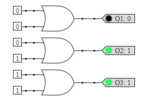

<p>The output of an OR gate is <em>true</em> if either or both inputs are true. Otherwise, it is false.</p>
<figure></figure>
<h3>Truth Table</h3>
<table class="truth-table">
  <tr><th>A</th><th>B</th><th>O</th></tr>
  <tr><td>0</td><td>0</td><td>0</td></tr>
  <tr><td>0</td><td>1</td><td>1</td></tr>
  <tr><td>1</td><td>0</td><td>1</td></tr>
  <tr><td>1</td><td>1</td><td>1</td></tr>
</table>
